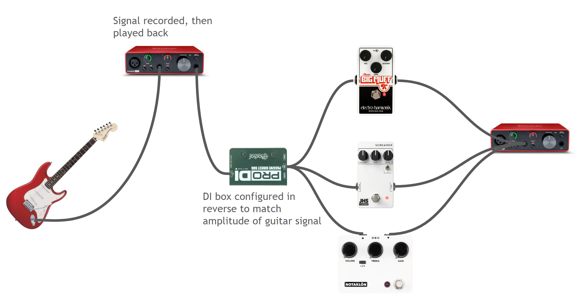

Value
Guitar players use a myriad of effects on their guitar signal in order to enhance and alter their tone to get the sound they exactly want. There is one particular style of effects that guitarists obsess over - the overdrive. The overdrive effect distorts a guitar signal in such a way that sounds - for lack of a better term - more rock’n’roll. The reason behind this obsession which becomes expensive very quickly, is that there are so many different types of overdrives out there with slightly varying sounds. This sparks heated discussions among guitarists on which overdrive is ‘the best’.
Distortion works by amplifying the input gain (digitally or in analog) of a sampled waveform. When pushed beyond its intended limits, the peaks of a clean (undistorted) guitar signal will be heavily compressed: this is called “clipping”. On a time domain, this can look like the peaks of the sampled waveform being flattened. Depending on how aggressive the clipping is (soft, hard, square-wave), this can have different implications on how the tone sounds. Notably, different overdrive circuits also exhibit different frequency responses; the famous “Tube Screamer” circuit features a boost of mid-frequencies (~700-1,000 Hz), while “transparent” overdrives like the Klon maintain a balanced frequency range. In this project, we will investigate the characteristics of each overdrive circuit’s clipping style, frequency response, and audible quality of tone to answer the question: Why do guitarists care so much? (and by extension, does it matter enough to sink hundreds or thousands of dollars into harnessing all these subtleties?[1])
This project aims to delve deeper into the realm of guitar signal processing by analyzing the distinct characteristics and quantitative values of different overdrive effects. By offering a more comprehensive and quantitative overview of how each effect alters the guitar signal, this analysis seeks to inform guitar players with the knowledge needed to make informed decisions about their tone.
[1] No, not really. But guitarists do it anyway.
Motion Model
At the most basic level, the motion that is involved in the guitar is the vibration of strings. The motion of vibrating strings on a guitar is a fundamental aspect of how sound is produced on this instrument. When a guitar string is plucked or strummed, it creates vibrations that the pickups in the guitar react to, which is trasmitted as a signal, then is altered and amplified by effects and amplifiers.
- Plucking the String: When a guitarist plucks a string, it sets the string in motion. The string moves away from its resting position and then returns, causing a back-and-forth motion. This movement generates waves along the length of the string.
- Frequency and Pitch: The frequency of these waves determines the pitch of the note produced. A higher frequency creates a higher pitch, while a lower frequency generates a lower pitch. The length and tension of the string affect its frequency of vibration.
- Nodes and Antinodes: As the string vibrates, it forms specific points where the string remains still called nodes, and points where the string moves the most called antinodes. These points are responsible for the creation of different harmonics and overtones, which contribute to the complex timbre of the sound.
- Harmonics: When a string vibrates, it doesn’t just produce a single frequency. It creates multiple frequencies simultaneously, known as harmonics. The first harmonic (also called the fundamental frequency) is the dominant frequency that determines the note played. Higher harmonics are multiples of this fundamental frequency and contribute to the richness of the sound.
- Magnetic Pickups: Electric guitars have pickups—coils of wire wrapped around magnets. When the strings vibrate, they disturb the magnetic field around the pickups, inducing a small electrical current in the coils. Each string has its own pickup or set of pickups dedicated to capturing its vibrations.
A crucial aspect of the analysis is the signal path. This is the path the guitar signal is passed through and altered by pedals. Our methodology was to record three tracks initially: a low G note on the low E string, a high G note on the high E string, and an open A power chord played on the A, D, G string. Then, the raw guitar signal is sent to a DI (direct input) box that is configured backwards. This ensures that what is being played back is at a similar amplitude as it was recorded. Each recorded clip is played back through an effects pedal, then re-recorded. Digital emulator counterparts are also used on the signal. This serves as another experiment to see how close an emulator is to its physical, analog counterpart.

Here is the list of effects used and its known characteristics. All pedals have gain and tone set to noon, and volume is adjusted accordingly to match a reasonable level it would normally be reocrded at. (Note: A transparent overdrive means it does not cause drastic changes in the frequency range.)
- Tube Screamer (digital - HX Native pillars/analog - JHS 3 Series Screamer)
- Mid boost (700Hz-1kHz)
- Medium gain
- Klon (digital - HX Native Minotaur/analog - JHS Notaklön)
- Transparent
- Low to medium gain
- Big Muff Fuzz (digital - HX Native Big Horn/analog Electro-Harmonix Big Muff PI)
- Wide-range tone control
- High gain
Frequency Analysis
A chord analyses
G2 note analyses
G5 note analyses
Clean vs. Distorted Signals
Clean guitar signals generally retain just the characteristic frequencies of the note or combination of notes being played. For example, all clean single-note (G2, G5) takes show a clear decomposition of harmonic frequencies present in the frequency domain. Relative to all distorted signals, regardless of effect method and type, clean signals show little to no extra harmonic information in their spectrograms. Distortion consistently introduces this extraneous noise, which is indicated with graininess in the background of the spectrogram. Harmonic frequencies of distorted single-note takes are also amplified relative to their fundamental. For example the G5 plot for the digital Tube Screamer has harmonic frequencies from around 4.9kHz and above that are raised significantly relative to their clean amplitude.
Additionally, it is notable that most analog signal processors have a low-pass tone control potentiometer that attenuates high frequencies. During testing, these control potentiometers were set at their median setting. Indications of these low-pass filters are apparent in the analog plots, where there is a clear cutoff of frequency information above a certain frequency. For example, the G5 plot for the analog tube screamer (a pedal that generally introduced a lot of noise) provides no audio information at all above approximately 15kHz.
These results accurately reflect the tonal implications of overdrives (and distortion as a whole), as we can observe relatively amplified harmonic frequencies as well as extraneous noise generated by clipping.
Types of overdrives
The two major overdrive types that were included in this comparison was the transparent and mid-hump overdrive. (The big muff is technically a fuzz, not an overdrive. This will be mentioned later.) From the spectrograms, the characteristics are clearly demonstrated. The Klon plots are generally very similar to the clean signal, while the Tube Screamer plots exhibit more sustain for the mid-range frequencies. This is a useful visualization for those who are still quite uncertain what the difference between overdrive pedals are, as having a visual guide to what one should be listening for can be very helpful. The Big Muff, which is a fuzz, shows a plot that is drastically different from other overdrive pedals. It adds lots of harmonics, which constitutes the extremely driven and full sound.
Digital vs. Analog Signals
As the digital versions of effects were produced, the goal was to get the most sonically similar settings in order for an accurate comparison. From the spectrogram plots, individual characteristics of each overdrive pedal is consistently demonstrated with both digital and analog pedals, to a point where it was nearly indistinguishable playing the audio file back to back. There were a couple things to note, however. First, the tube screamer had a lot of noise when recording the analog version. It is suspected that the DI box used to match the signal level introduced some sort of noise due to grounding issues. Second, the digital big muff has more high-end frequencies. This is likely due to the filter circuit in the analog version being more aggressive, cutting off higher frequencies for a richer low-end sound. The verdict here is that while there are subtle differences, digital vs. analog pedals are extremely close when analyzed through spectrograms, and to the human ear.